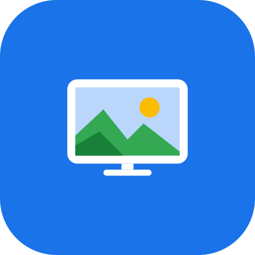

Foto TV
Show the photos you pick from Google Photos, shared albums included, on your Fire TV.
What it does
Foto TV is a free, open-source Android TV app for Amazon Fire TV. You choose photos or albums in Google Photos from your phone, and the app displays them on the TV in a grid, a full-screen viewer and an automatic slideshow.
How it works
- The TV shows a QR code. Scan it with your phone.
- Sign in with Google and approve read-only access to the photos you choose
(scope
photospicker.mediaitems.readonly, Google Photos Picker API). - In Google Photos, pick the photos or albums you want on the TV.
- The selected photos are saved in private storage on the TV and shown there.
Your data
- The app only receives the photos you explicitly select. It cannot see the rest of your library.
- Photos and sign-in tokens stay on your TV (tokens are encrypted). There are no servers run by the developer.
- No ads, no analytics, no tracking. Your data is never sold or shared, and never used to train AI models.
- You can delete everything from the app (Clear, Disconnect account) and revoke access in your Google Account.
The use of information received from Photos APIs will adhere to the Google User Data Policy, including the Limited Use requirements. Foto TV's use and transfer of information received from Google APIs adheres to the Google API Services User Data Policy, including the Limited Use requirements.
Foto TV
Le foto che scegli in Google Foto, anche degli album condivisi, sulla tua Fire TV.
Cosa fa
Foto TV è un'app Android TV gratuita e open source per Amazon Fire TV. Scegli foto o album in Google Foto dal telefono e l'app li mostra sulla TV in una griglia, a schermo intero e in presentazione automatica.
Come funziona
- La TV mostra un codice QR: inquadralo con il telefono.
- Accedi a Google e approva l'accesso in sola lettura alle foto che scegli
(ambito
photospicker.mediaitems.readonly, Google Photos Picker API). - In Google Foto scegli le foto o gli album da portare sulla TV.
- Le foto scelte vengono salvate in una cartella privata sulla TV e mostrate lì.
I tuoi dati
- L'app riceve solo le foto che selezioni esplicitamente, non vede il resto della libreria.
- Foto e token restano sulla TV (i token sono cifrati). Non ci sono server gestiti dallo sviluppatore.
- Nessuna pubblicità, analisi d'uso o tracciamento. I dati non sono venduti né condivisi e non servono ad addestrare modelli di IA.
- Puoi cancellare tutto dall'app (Svuota, Scollega account) e revocare l'accesso dall' Account Google.
L'uso delle informazioni ricevute dalle API di Google Foto rispetta la Google User Data Policy, inclusi i requisiti di Limited Use (Google API Services User Data Policy).
Informativa sulla privacy · Scarica l'ultimo APK · Codice sorgente